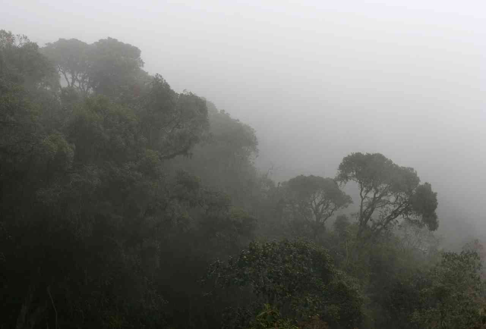
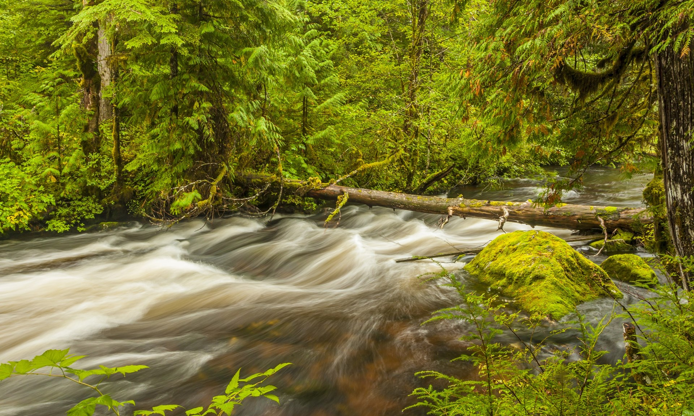
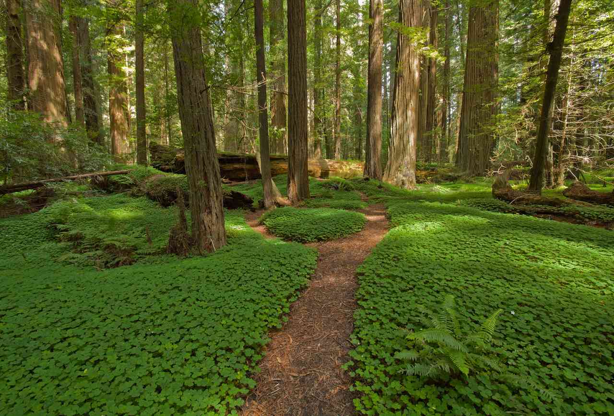

The Forests
02/26/2019
John Muir has said that “The clearest way into the Universe is through a forest wilderness.” One of the best places on Earth to explore is our forests. For a part of history, mankind lived in forests and thrived. They are a natural beauty of the world that exist all over but they are also slowly going away. Bucolic Outdoors has picked out some of our favorite forests to experience.
Bellavista Cloud Forest Reserve - Quito, Ecuador
| The cloud forests of Ecuador cover the slopes of the Andean mountains from about 900 meters to about 2500 meters. They are forests of high biodiversity, with a variety of wildlife and plants that have been studied very little.
The Bellevista is most widely known for its clouds. They are a product of the cool and humid environment with frequent canopy level cloud cover and create a mystic effect that makes people want to explore the forest.
Whether you want to bushwack with machetes through the Valley of Mist, hike upstream to the Hidden Falls, catch sight of the of epiphytes, or just relax in a hammock in the whirring company of fearless hummingbirds, Bellavista is a great place to commune with nature -- and yourself.
The Bellavista Cloud Forest is a one of a kind place that is full of mystery and it’s perfect for explorers.
|
 |
Great Bear Rainforest - British Columbia, Canada
|  |
The Great Bear Rainforest is a temperate rain forest on the Pacific coast of British Columbia, Canada comprising 6.4 million hectares. It is part of the larger Pacific temperate rainforest ecoregion, which is the largest coastal temperate rainforest in the world.
The best time to visit the Great Bear Rainforest is late August to the middle of October. Thousands of returning salmon draw wildlife to the local rivers, making this the best time to view grizzly bears and the elusive Kermode bear, or Spirit Bear. Trout fishing is in season year-round, and different Pacific salmon species run the rivers from April through October.
The Great Bear Rainforest is a peaceful place to reconnect with nature.
|
Humboldt Redwoods State Park - Humboldt County, California
| Humboldt Redwoods spans 53,000 acres, an area almost twice the size of San Francisco. About one-third, or 17,000 acres, of the park is old-growth redwood forest—the largest expanse of ancient redwoods left on the planet.
This park offers one of the best places to see redwoods in the entire North Coast region. One of the popular things to see is Founder’s Grove, with its fallen 362-foot Dyerville Giant.
The South Fork of the Eel River provides excellent opportunities for fishing, boating, picnicking, and swimming. More than 100 miles of trails await hikers, bicyclists, and equestrians. There are also over 250 campsites to stay the night at.
Humboldt Redwoods is a massive park to see the natural beauty of nature that has been around for a long time.
|
 |